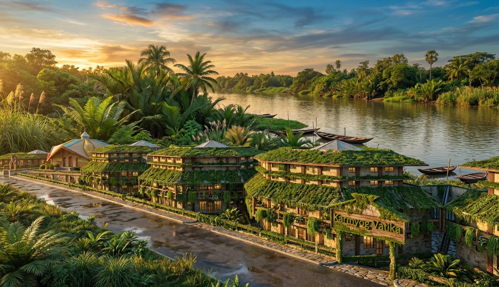
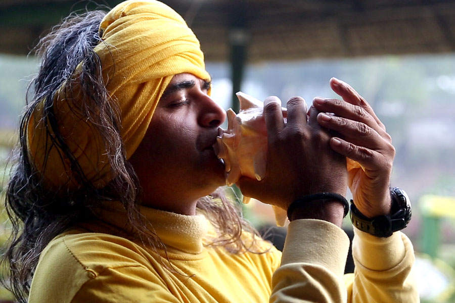
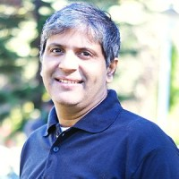
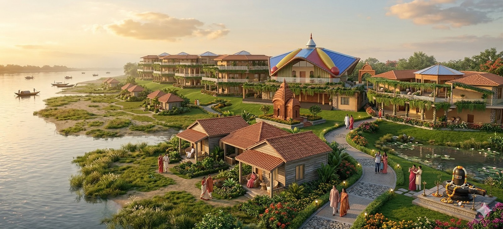

Est. 30+ Years Ago
KarmYog for 21st Century Foundation
A purpose-driven institution at the intersection of education, sustainability, technology, and art.
Est. 30+ Years Ago
A purpose-driven institution at the intersection of education, sustainability, technology, and art.
About the Foundation
KarmYog for 21st Century Foundation (KY21C) is dedicated to transforming the way communities live, learn, and sustain themselves by integrating biophilic design, behavioral science, and digital engagement.
The Foundation represents a culmination of over three decades of pioneering work. It has evolved into a powerful, multidisciplinary ecosystem that converts ideas and philosophy into living, scalable models of transformation.
Headquartered at IIT Kharagpur Research Park, Newtown Kolkata, KY21C operates through a constellation of institutions including the Biophilic Studio, the KarmYog Vatika Network, and the OmniDEL Tabmaster Platform.
The Movement
At the heart of KY21C lies Mission Biophilia — a national initiative that aims to reorient human habitats toward harmony with nature through biophilic design, ecological stewardship, and intergenerational learning.
KarmYog Vatika at RangaMati is an independent, mission-led campus on the banks of the Ganges — a living ecosystem where 150 learners and 60 elders share a biophilic campus of 4 Named Ashrams across 97 kathas.

Proven Track Record
IIT Kharagpur Research Park
15,000 sq ft biophilic pavilion — "Museum of the Future". 1 lakh visitors, 3 million digital views.
IIT Kharagpur Research Park
Live lab for design, content creation, and ecological research. Operational hub for all KY21C programs.
Partnership with HIDCO
Demonstrated the Vatika model in practice — transforming idle spaces into thriving learning ecosystems.
The Larger Vision
KarmYog Vatika at RangaMati is part of an ambitious national initiative: one million digitally empowered Learning-Gardens (Vatikas) — one for every polling booth in the country. A relationship-management platform at population scale, combining livelihood, learning, ecology, and lifestyle transformation.
Each Vatika serves four functions:
Door-step delivery of life-skills and livelihood education, curated from the best experts. This is free.
An integration of the Behtar Life Academy (courses on sustainable living, wellness, financial literacy, Yogic AI) and the Behtar Life Shop (curated organic products, ethical sourcing). Exchange of products, services and knowledge — covering the cost of operations.
Connecting households with governmental schemes, making them responsible beneficiaries. Subsidizes running costs and creates institutional last-mile connectivity.
Content creation and social media presence, powered by AI tools — giving every Vatika a digital voice and community reach.
RangaMati Vatika is the flagship campus of this mission — where the philosophy of enlightened livelihood at population scale takes physical form on the banks of the Ganges.
The Network
RangaMati is not alone. It is part of a growing network of KarmYog Vatikas — each serving a different community need, each rooted in the same principles of biophilic design, intergenerational learning, and dignified living.
Senior living residence in New Town, Kolkata. 16 units, 24 capacity. Ready February 2026.
4,000 sq ft retail experience store at Rosedale Plaza, Newtown. Integration of Nature, Culture & Lifestyle.
Senior assisted services in an existing community in New Town. Operational and serving elders.
Leadership

MahAcharya Sourabh J. Sarkar
Founder, KarmYog for 21st Century
A systems thinker, educator, and designer with over three decades of multidisciplinary experience. Graduate of IIT Kharagpur and Syracuse University. Conceptual architect of Mission Biophilia, creator of OmniDEL, and founder of the KarmYog Vatika Network. Recipient of the NSDC Best Learning Methodology Award and a $1M Tata Trusts grant for educational innovation.
GunaMata Reena J. Sarkar
Director, Systems & Governance
Co-founder and guiding force behind the Foundation's institutional structure. Over two decades of experience in organizational systems, team culture development, and governance frameworks. Leads KY21C's Systems and Governance Division.

GuruDasa Ram Badrinathan
Co-Founder, AI & Strategy
Heads KY21C's AI for Bharat initiative, bridging artificial intelligence, business transformation, and social impact. Deep domain expertise in digital strategy, analytics, and enterprise transformation.
Name: KarmYog for 21st Century Foundation
Registration: AOP registered in 2008 under the West Bengal Society Registration Act (XXVI), 1961
Address: 401, IIT Kharagpur Research Park, Newtown, Kolkata 700135
Email: reachus@ky21c.org
Phone: +91 9167719898
Agreement Duration: From Effective Date
Land Title: Remains with the founding family — KYF holds development and operating rights

Sponsor a living space on this campus. Your name, etched in stone, becomes part of an intergenerational community on the banks of the Ganges.